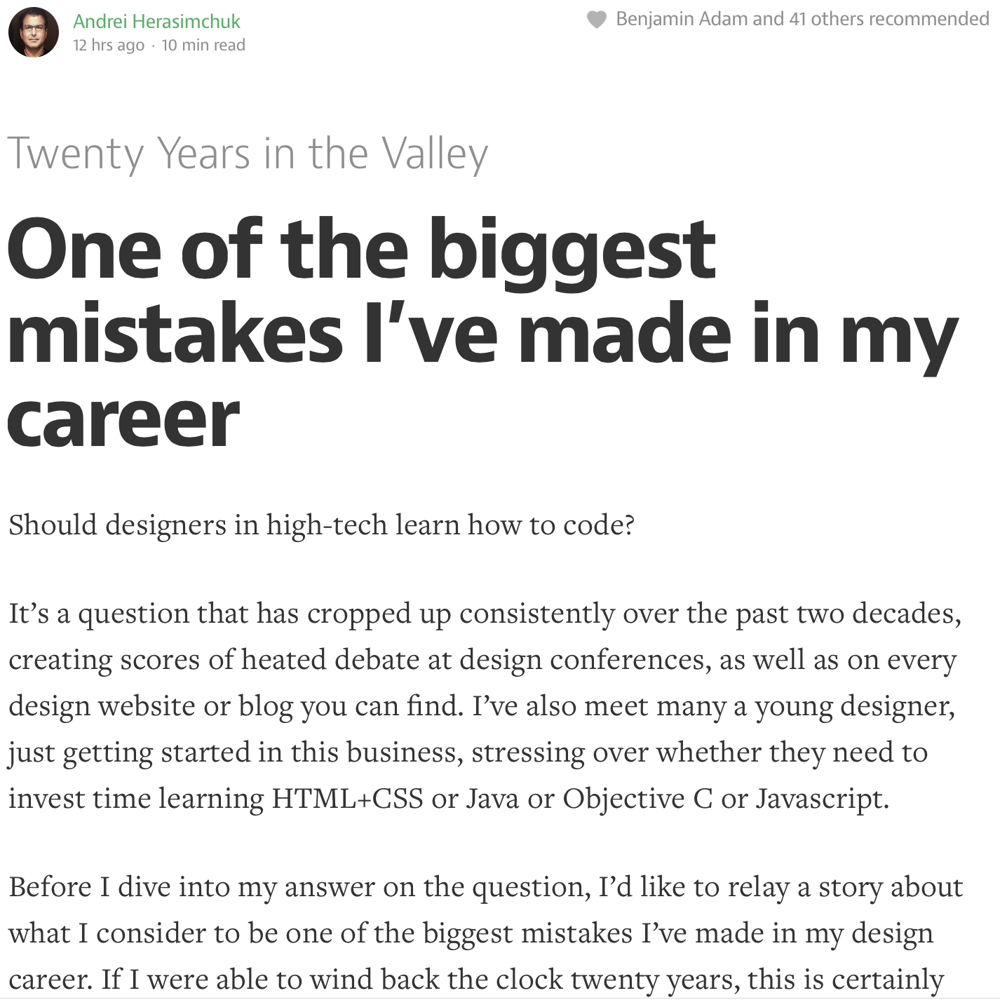

One of the biggest mistakes I've made in my career

My own article about "one of the biggest mistakes I've made in my career" would be different, but I love Andrei's advice. I think it applies to more than just designers debating whether or not they should learn to code. I feel like everybody should learn a specialty, whether or not it becomes the thing you do every day. Additionally, I'm a big proponent of being able to take your ideas to the next level or step. If you can design, figure out how to make your product come alive (through code or prototyping). If you can build wood-only furniture, learn how upholster. If you can cook, learn how to plate. If you can plate, learn how to serve. Maybe it's better summarized as learning how to do the job of the person you hand your "finished" product to. There's a glorious energy, and collaboration point to be found when you're really familiar with the next person in line. Learning to code as a designer is one of those steps.
Previously: Beth Dean - Emotional Intelligence in Design Next: The Fringe Benefits of Quitting